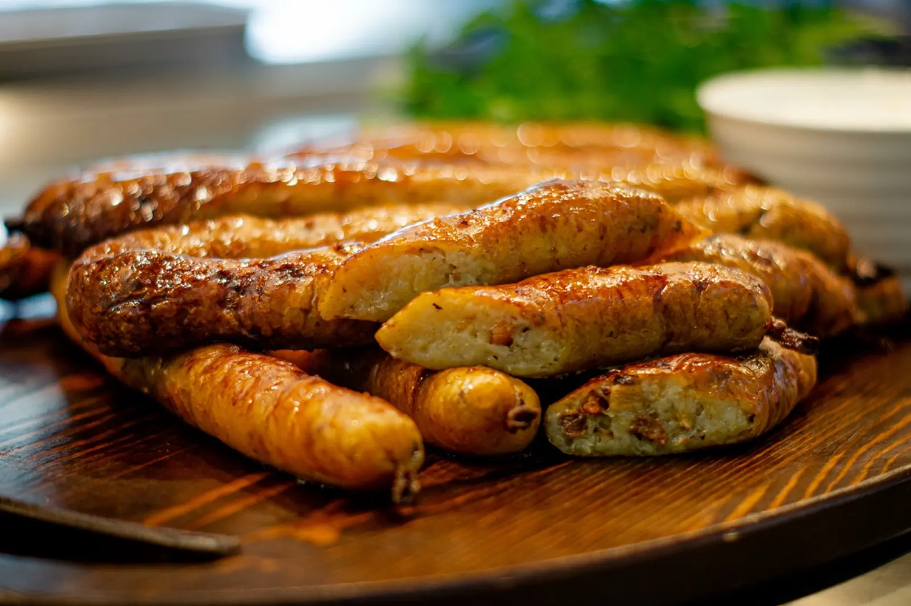

ARTICLE • October 13, 2026
Pomeranian Cuisine — Fish, Herring, and Golce
Pomeranian cuisine is the taste of the Baltic meeting Hanseatic tradition. Discover what is worth eating on the coast — from herring to golce, with specific places and prices.

Pomeranian cuisine is the cuisine of a coastal region — based on Baltic fish, potatoes, and cabbage, with influences from Kashubian, Kociewie, and Żuławy cuisines. It is simple, hearty, but at the same time diverse — from fish specialities to thick soups. Pomerania is a region that for centuries belonged to the Teutonic state, then to Prussia, and Gdańsk was one of the richest Hanseatic cities — hence the German, Scandinavian, and Dutch influences in Pomeranian cuisine. Add to that the specificity of Żuławy — a depression region east of Gdańsk, where Mennonites from Holland and Frisia settled, bringing with them their own culinary culture: cheeses, bakes, potatoes, and cabbage. Pomeranian cuisine is therefore a combination of three worlds: fishing (Baltic), agricultural (Żuławy), and burgher (Gdańsk, Gdynia).
This guide shows 8 dishes you must try in Pomerania, and specific places in Gdańsk, Gdynia, Sopot, and smaller coastal towns where you can eat them in an authentic version.
Baltic Fish
1. Herring in Oil
A classic of Pomeranian cuisine and one of those dishes that on the coast is eaten not only in restaurants but also at home — especially in winter. Marinated herring, served with onion, oil, and potatoes in their jackets. There are many variations — in sour cream, in vinegar, with mustard, with raisins, even with horseradish. In Pomerania, herring is a symbol of Hanseatic trade — as early as the Middle Ages, Gdańsk exported herring throughout Europe, and in the 16th century herring was one of the most important trade goods of the Baltic. Today herring returns to Pomeranian tables as an everyday and festive dish — in the traditional version with onion and oil, in the modern version with additions. The best herring is found in small fish shops and fish bars by the sea — not in supermarkets, where industrially marinated products are sold.
Price: 15–25 PLN per portion in a fish shop, 8–12 PLN per jar in a fish shop. Where: Bar Mleczny Neptun (Gdańsk, ul. Długa 32/34), Bar Rybny Neptun (Gdynia, al. Jana Pawła II 11), Smażalnia Rybna Kaszuby (Władysławowo, ul. Portowa 1).
2. Smoked Fish
Smoked fish is the icon of the coast and one of those dishes whose flavour changes depending on the smokehouse. Halibut, salmon, mackerel, eel — every fish smoked in a home smokehouse tastes different, because every smokehouse has its own recipe and its own wood (usually alder, beech, or oak). It is served with bread, butter, and lemon, sometimes with horseradish. Fish smoking in Pomerania has a long tradition — dating back to the times when fishermen had to preserve their catch for longer. Today smoking is a craft that has survived in a few fishing families in Gdynia, Hel, Łeba, and the Vistula Spit. Pay attention to smoked mackerel (cheapest and most available), salmon (more expensive but more delicate), and eel (most expensive but most valued).
Price: 25–45 PLN for mackerel, 45–70 PLN for salmon, 80–120 PLN for eel (per kg). Where: Wędzarnia Ryb in Gdynia (al. Jana Pawła II 11), Wędzarnia Ryb in Hel (ul. Portowa 4), Wędzarnia Ryb in Łeba (ul. Kościuszki 88), Wędzarnia on the Vistula Spit (Krynica Morska, ul. Gdańska 2).
3. Fried Flounder
A flat Baltic fish, fried in a pan, served with fries, salad, and lemon. A classic of seaside fish shops. Flounder is a fish that has graced Pomeranian tables for centuries — its meat is delicate, white, with a mild flavour, and the price is affordable. In the traditional version, flounder is coated in flour and fried in butter or oil, served with boiled potatoes and sauerkraut salad. In the modern version — with fries and coleslaw. Flounder has the advantage of being a relatively cheap and easily available fish — in the summer season in fish shops, you can get it for 30–40 PLN per portion, which makes it one of the most affordable Baltic fish. Pay attention to whether the flounder is fresh — it should have bright eyes and pink gills.
Price: 30–50 PLN per portion (2 flounders with sides). Where: Smażalnia Rybna Kaszuby (Władysławowo), Bar Rybny Neptun (Gdynia), cutter fish shops in Chałupy, Jastarnia, Kuźnica.
Kashubian and Żuławy Dishes
4. Golce
The Kashubian version of Silesian dumplings — potato balls with flour, boiled in water. They are served with onion, lard, or mushroom sauce. Simple, filling, rural. Golce is one of those dishes that connect Pomerania with the rest of Poland — similar dumplings are eaten in Silesia (Silesian dumplings), in Greater Poland (pyzy), and in Kashubia (golce). The difference lies in the proportions: golce are more “potato-based” (less flour), which gives them a more expressive flavour. In Pomerania, golce are served mainly with meats — especially roasts and game, but also as a standalone dish with lard topping. In the Kashubian version, golce are sometimes served with mushroom sauce or sour cream; in the Pomeranian version — with onion and cracklings.
Price: 15–25 PLN per portion. Where: Karczma Kaszubska (Kartuzy, ul. Rynek 18), Bar Mleczny Neptun (Gdańsk), Chata Kaszubska (Chmielno, ul. Krótka 2).
5. Kashubian Cabbage with Mushrooms
Braised cabbage with dried mushrooms, onion, and caraway. It is served with meats, especially game and roasts. Simple, deeply rooted in Kashubian tradition. Cabbage with mushrooms is one of those dishes that in Pomerania is eaten primarily in autumn and winter — after mushroom picking in Kashubian forests. In the Kashubian version, dried porcini or bay bolete, onion, caraway, and bay leaf are added to the cabbage, and the whole is stewed slowly for several hours. The result — soft, aromatic cabbage with a deep, forest flavour. In the Pomeranian version, cabbage is served with pork roast; in the Kashubian version — with game or golce. Note that sauerkraut in Pomerania is often homemade, with horseradish and garlic — this gives it a deeper flavour than shop-bought.
Price: 12–20 PLN per portion. Where: Karczma Kaszubska (Kartuzy), Chata Kaszubska (Chmielno), Restauracja Kaszubska (Gdańsk, ul. Straganiarska 20).
6. Żuławy Bread
Dark sourdough bread with rye and wheat flour. Characteristic of Żuławy — a depression region east of Gdańsk, where Mennonites from Holland and Frisia settled, bringing with them their own culture of bread baking. Żuławy bread has a dark, moist crumb and a crispy crust — thanks to the long fermentation of the sourdough and baking in a bread oven. Unlike other Polish breads, Żuławy bread has a distinct, slightly sour flavour and the addition of caraway. In Żuławy, bread is still baked in home ovens to this day — usually once a week. Buy it in small bakeries in Nowy Dwór Gdański, Stegna, or Sztutowo.
Price: 8–15 PLN per loaf. Where: Piekarnia Żuławska (Nowy Dwór Gdański, ul. Sikorskiego 15), Market in Gdańsk (Hala Targowa, Saturday morning), local bakeries in Żuławy.
Soups and Bakes
7. Fish Soup
A soup based on broth from Baltic fish, with vegetables, potatoes, and sour cream. It is served with croutons or bread. In the Pomeranian version — with dill and bay leaves, which give the soup freshness and depth. The key to a good fish soup is the broth — it is cooked from several species of fish (usually roach, perch, and cod), and only at the end is the main fish added, e.g. salmon or eel. In Pomerania, fish soup is sometimes thickened with egg yolk and sour cream, which gives it a creamy consistency. In the Kashubian version, mushrooms are added; in the Pomeranian version — dill and bay leaf. Order it at the fishing port in Gdynia or in small fish shops on the Vistula Spit.
Price: 15–25 PLN per bowl. Where: Bar Rybny Neptun (Gdynia), Restauracja Tawerna (Gdańsk, ul. Powroźnicza 19), Karczma Młyńska (Gdańsk, ul. Młyńska 16).
8. Szneki z Glancem
Sweet yeast buns with streusel and icing. Popular for breakfast and afternoon tea throughout the region. In the Pomeranian version — with raisins and orange peel, which give them a more expressive, spicy flavour. Szneki z glancem is one of those dishes that in Pomerania is eaten every day — at home, in a bakery, in a café. The name comes from the Pomeranian dialect: “szneki” are buns, “glanc” is icing (from German “Glanz” — shine). In Gdańsk and Gdynia, szneki z glancem are virtually the hallmark of local bakeries — you can get them in most pastry shops, but the best are in small, family bakeries in the Old Town of Gdańsk and in Gdynia-Orłowo. In the traditional version, szneki are about 8 cm in diameter and are sprinkled with streusel made of butter, flour, and sugar.
Price: 4–8 PLN per piece. Where: Piekarnia Pellowski (Gdańsk, ul. Szeroka 44), Cukiernia Sowa (Gdańsk, ul. Długa 55), Piekarnia Orłowska (Gdynia, ul. Orłowska 20).
Where to Eat — Specific Places
Gdańsk (Old Town and Wrzeszcz):
- Bar Mleczny Neptun (ul. Długa 32/34) — a legendary milk bar from 1962, herring, fish soup, golce.
- Restauracja Tawerna (ul. Powroźnicza 19) — Pomeranian cuisine in an elegant version, fish, seafood.
- Karczma Młyńska (ul. Młyńska 16) — home-style Pomeranian cuisine, fish soup, golce.
- Piekarnia Pellowski (ul. Szeroka 44) — szneki z glancem, Żuławy bread.
Gdynia (port and Śródmieście):
- Bar Rybny Neptun (al. Jana Pawła II 11) — a fish bar in the port, herring, flounder, fish soup.
- Wędzarnia Ryb in Gdynia (al. Jana Pawła II 11) — smoked fish straight from the smokehouse.
- Restauracja Falla (ul. Świętojańska 54) — Pomeranian cuisine in a modern version.
Sopot and smaller coastal towns:
- Smażalnia Rybna Kaszuby (Władysławowo, ul. Portowa 1) — flounder, herring, cod.
- Wędzarnia Ryb in Hel (ul. Portowa 4) — mackerel, salmon, eel.
- Wędzarnia Ryb in Łeba (ul. Kościuszki 88) — smoked fish straight from the cutter.
- Karczma Kaszubska (Kartuzy, ul. Rynek 18) — golce, cabbage with mushrooms, herring.
Practical Tips
- Buy herring in small fish shops, not in supermarkets. Ask when it was marinated — fresh is best.
- Buy smoked fish in smokehouses, not in tourist shops — in smokehouses they are cheaper and real; tourist shops often sell fakes.
- Flounder should have bright eyes and pink gills. If the eyes are cloudy, the fish is old.
- Buy Żuławy bread at the market in Gdańsk (Hala Targowa, Saturday morning) — then it is the freshest.
- Restaurants on Długi Targ in Gdańsk are more expensive and touristy. Go 2 streets further — to milk bars and taverns — where the food is cheaper and better.
- In the summer season (July–August) fish shops by the sea are very crowded. Go out of season — September is the best month.
Summary
Pomeranian cuisine is the cuisine of three worlds — fishing (Baltic), agricultural (Żuławy), and burgher (Gdańsk, Gdynia). Hearty, diverse, deeply rooted in the region's tradition. Instead of fashionable dishes, you will find classics here: herring, smoked fish, flounder, golce, cabbage with mushrooms, Żuławy bread. Plan your trip to Pomerania to try at least five of the eight dishes — and preferably eat them in fish shops at the port and in smokehouses, where the cuisine is still home-style, not touristy. If you like coastal regions, also check our pages on Kashubian cuisine and the Baltic — there you will find more about the fishing culture itself and places worth visiting.